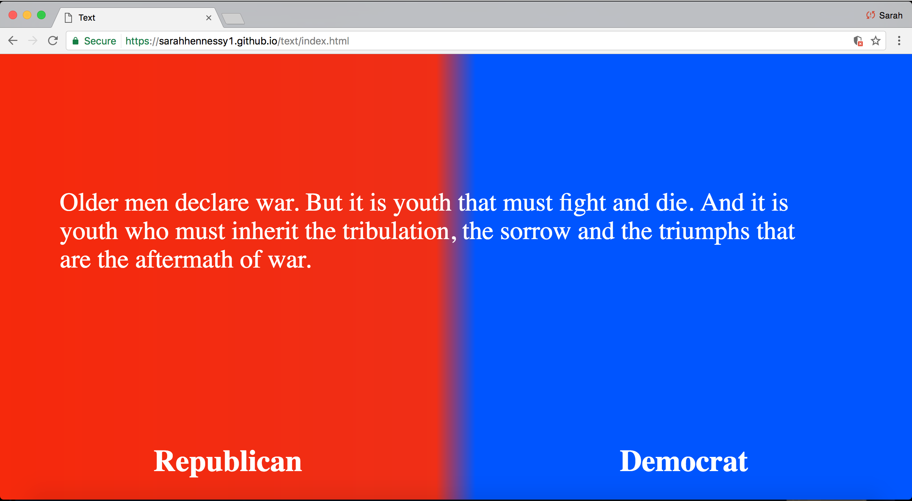
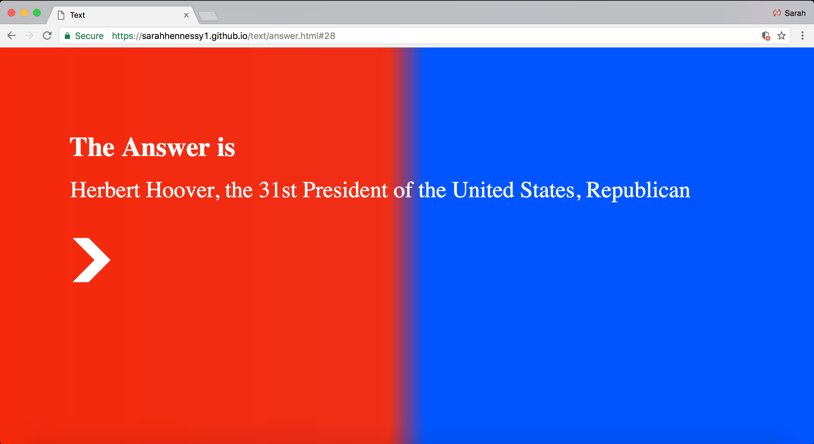
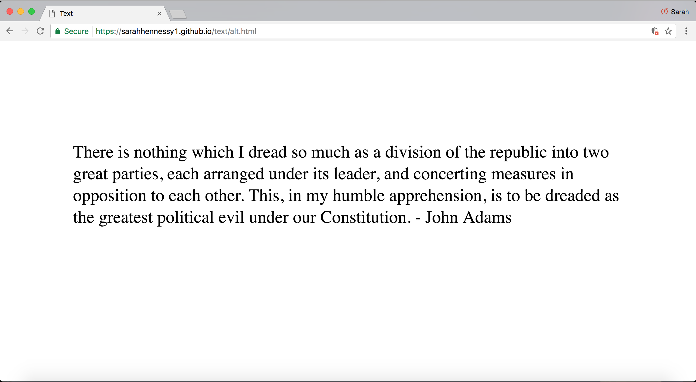

For this text based project I wanted to focus on the idea of the divide between the two major political parties in America. The democratic and republican parties have forged such a strict divide that ideas and mentalities have become associated with each and judgments are passed. I wanted to express this idea first in a very light hearted way, make the idea more game like and less confrontational while still showcasing this divide. I did this by making the background half red and half blue with a very small amount of gradient in between that keeps the edges slightly fuzzy yet still distinct.

For the first selection of text I choose to showcase popular quotes made by former presidents of the United States who were members of either the democratic or republican parties. After reading this quote the user is given the option to select "Democrat" or "Republican", I tested how various friends reacted to this initial site and many quickly understand that they were supposed to guess which group to attribute the quote too.

After selecting their choice the correct answer is displayed with an arrow option underneath the answer. One place the arrow may take you is back to the home page where the user can continually "play the game" ; However, the arrow offers another option that presents an alternative page.

This alternative page has a bright white background with black text, this presents an immediate change in the site. On this alternative page is where the second text comes in, this page presents a randomly generated quote from a founding father who is not a member of the Republican or Democratic Party (as we know them today). These quotes generally warn against the dangers of America falling into a two party system that could divide the country. This alternative page doesn't offer any links, buttons or any reactive options for the user, it is simply the text on the screen that the user is faced with. Overall, this project demonstrates the idea that the divide between our country’s two major political parties isn't as clear as we once believed, or that it shouldn't be.